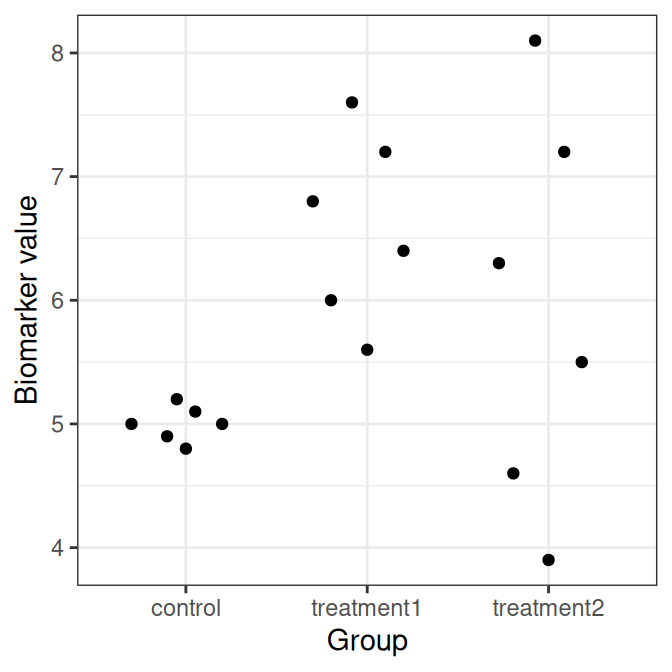

ctrl <- c(145, 152, 149, 143, 150)
diet1 <- c(154, 158, 160, 151, 156)
diet2 <- c(166, 162, 170, 168, 164)
##Combine in a data frame
df <- data.frame(
Hb = c(ctrl, diet1, diet2),
group = factor(rep(c("control", "diet1", "diet2"), each=5))
)Exercises: Analysis of variance (ANOVA)
Exercise 1 (Why ANOVA?) You want to compare the mean Hb level in three groups: a control group, a vegetarian diet group, and an iron-rich diet group.
- Why is a two-sample t-test not sufficient here?
- State the null and alternative hypotheses for a one-way ANOVA.
- What does a significant ANOVA result tell you?
Solution
A two-sample t-test compares only two groups at a time. Since there are three groups here, repeated pairwise t-tests would be needed, which increases the risk of Type I error.
The hypotheses are
\[H_0: \mu_1=\mu_2=\mu_3\] \[H_1: \text{not all group means are equal}\]
- A significant ANOVA result means that there is evidence that at least one group mean differs from the others. However, it does not tell us which groups differ.
Exercise 2 (Compute the F statistic) A one-way ANOVA is performed for \(k=3\) groups with total sample size \(N=18\). The following sums of squares are obtained:
- \(SS_{between}=48\)
- \(SS_{within}=72\)
- Compute the degrees of freedom for the between-group and within-group variation.
- Compute \(MS_{between}\) and \(MS_{within}\).
- Compute the F statistic.
Solution
- The degrees of freedom are
\[df_{between}=k-1=3-1=2\] \[df_{within}=N-k=18-3=15\]
- The mean squares are
\[MS_{between}=\frac{SS_{between}}{df_{between}}=\frac{48}{2}=24\] \[MS_{within}=\frac{SS_{within}}{df_{within}}=\frac{72}{15}=4.8\]
- The F statistic is
\[F=\frac{MS_{between}}{MS_{within}}=\frac{24}{4.8}=5\]
Exercise 3 (Interpret an ANOVA table) A one-way ANOVA gives the following table:
| Source | Df | Sum Sq | Mean Sq | F value | Pr(>F) |
|---|---|---|---|---|---|
| group | 2 | 180.4 | 90.2 | 5.63 | 0.008 |
| Residual | 27 | 432.3 | 16.0 |
- What is the null hypothesis?
- Is there evidence of a difference among the groups at the 5% significance level?
- Which row corresponds to the within-group variation?
- Does this result tell which groups differ?
Solution
- The null hypothesis is
\[H_0: \mu_1=\mu_2=\mu_3\]
Yes. Since the p-value is 0.008 and $0.008<0.05), we reject \(H_0\).
The residual row corresponds to the within-group variation.
No. The ANOVA test is an omnibus test. It tells us that at least one group mean differs, but not which groups differ.
Exercise 4 (One-way ANOVA in R) The following Hb values (g/L) were observed in three groups of participants:
Perform an ANOVA test to investigate whether the mean Hb levels differ among the three groups.
- State the null and alternative hypotheses.
- Plot the data to visualize the group locations and spread.
- Perform a one-way ANOVA in R.
- Interpret the result.
Solution
- The hypotheses are
\[H_0: \mu_{control}=\mu_{diet1}=\mu_{diet2}\] \[H_1: \text{not all group means are equal}\]
- Plot the data:
## Using a beeswarm like plot
df |> ggplot(aes(x = group, y = Hb)) + geom_quasirandom() + theme_bw() + xlab("Group") + ylab("Hb value")
## Using a boxplot
df |> ggplot(aes(x = group, y = Hb)) + geom_boxplot() + theme_bw() + xlab("Group") + ylab("Hb value")
## Can also be done using plot
plot(df$group, df$Hb)
- Perform one-way ANOVA in R:
fit <- aov(Hb ~ group, data = df)
summary(fit) Df Sum Sq Mean Sq F value Pr(>F)
group 2 832.1 416.1 34.77 1.02e-05 ***
Residuals 12 143.6 12.0
---
Signif. codes: 0 '***' 0.001 '**' 0.01 '*' 0.05 '.' 0.1 ' ' 1- The ANOVA p-value is 1.0161078^{-5}. Because the p-value is below 0.05, we reject \(H_0\) and conclude that there is evidence that not all group means are equal.
Exercise 5 (Post hoc comparisons) Continue with the data from Exercise 4.
- Why are post hoc tests needed after a significant ANOVA result?
- Perform Tukey’s HSD test in R.
- Which pairs of groups differ significantly? Use the significance level 0.05.
Solution
ANOVA is an omnibus test. A significant ANOVA result tells us that at least one group mean differs, but it does not tell us which groups differ. To identify the specific differences, post hoc pairwise comparisons are needed.
Perform Tukey’s HSD test:
TukeyHSD(fit) Tukey multiple comparisons of means
95% family-wise confidence level
Fit: aov(formula = Hb ~ group, data = df)
$group
diff lwr upr p adj
diet1-control 8.0 2.163127 13.83687 0.0085339
diet2-control 18.2 12.363127 24.03687 0.0000070
diet2-diet1 10.2 4.363127 16.03687 0.0014703- The output shows that the pairwise comparisons between all three pairs are significant, because the adjusted p-values are below 0.05.
Exercise 7 (Kruskal-Wallis test) Here is a replacement for the last exercise in the same style, but now with actual numbers and an R calculation.
You can replace the old exr-kruskal block with this:
Exercise 6 (Kruskal-Wallis test) The following biomarker values were observed in three treatment groups:

- Why might the Kruskal-Wallis test be a reasonable alternative to one-way ANOVA?
- State the null and alternative hypotheses.
- Perform the Kruskal-Wallis test in R.
- What do you conclude?
Solution
The Kruskal-Wallis test is a rank-based alternative to one-way ANOVA. It can be useful when the assumptions of ANOVA, such as approximate normality within groups, are doubtful.
The null hypothesis is that the groups have the same distribution, or equivalently that the mean ranks are equal across groups.
\[H_0: \text{the group distributions are the same}\] \[H_1: \text{at least one group differs}\]
- Perform the Kruskal-Wallis test in R:
kruskal.test(biomarker ~ group, data = df2)
Kruskal-Wallis rank sum test
data: biomarker by group
Kruskal-Wallis chi-squared = 6.6131, df = 2, p-value = 0.03664- As the p-value is below 0.05, we reject \(H_0\) and conclude that there is evidence that at least one group differs from the others.